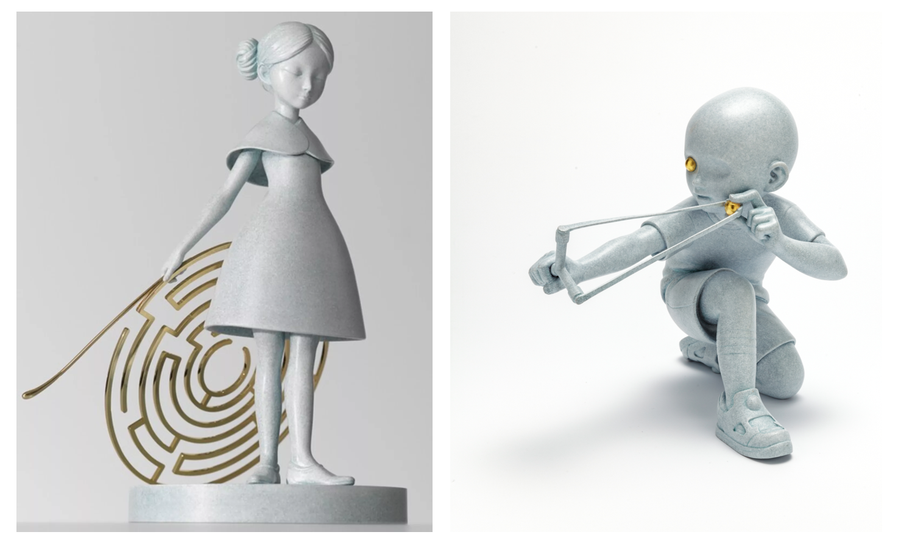
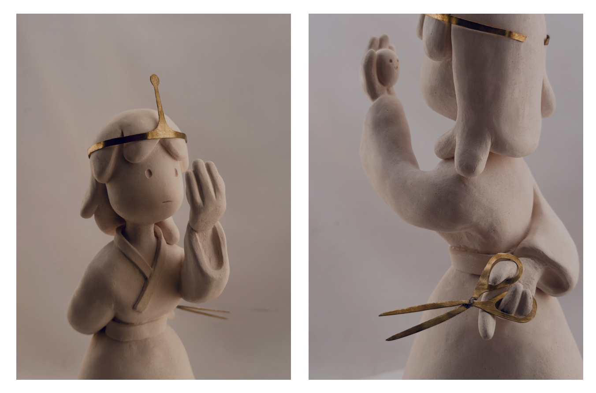
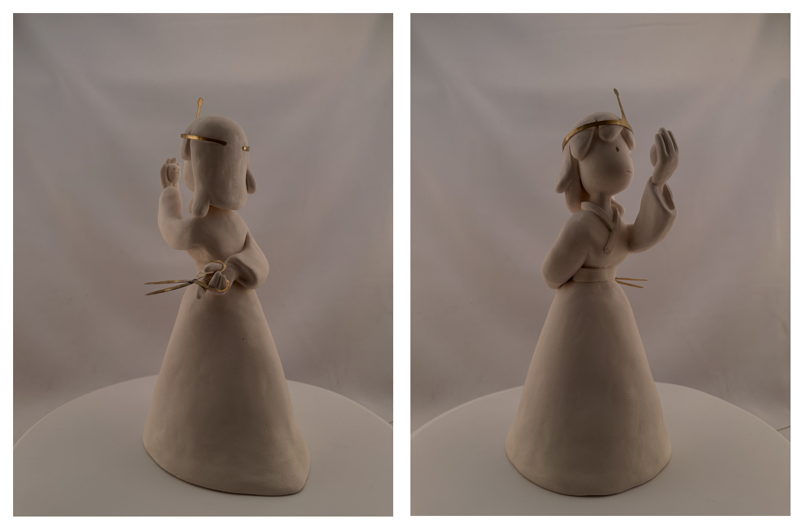

In 2025, I was invited by Gallery Nucleus to participate in their 15th Anniversary Adventure Time art show. I was honored to be a part (as it's one of my favorite animated shows), and wanted to pay homage to my all-time favorite scene.
In Season 4 episode 26, "The Lich", we get a glimpse into the mind of Princess Bubblegum (Bonnibel):
Thanks to this Youtuber for uploading this exact scene.
One of Princess Bubblegum's main themes throughout the show is her struggle to rule her kingdom. She struggles to relate to her subjects, often treating them as science experiments, but also feels a strong need to protect and serve them. I think this one scene captures her so perfectly, and wanted to create a sculpture that paid homage to it.
These were my design goals after the exploration phase:
- Pay homage to Bonnibel's character, as shown in the scene from "The Lich" episode
- Have the sculpture seem as if Bonnibel's subjects built a statue in honor of her. Regal, yet simple and almost ancient.
One of my main references were artist James Jean's sculptural work, which I feel fit the design goals well:

I loved the aesthetic of the single-colored bodies which were reminiscent of ancient marble statues, elevated by the gold accents.
I thought it would be appropriate to represent Bonnibel's two sides with a gold accent (I used brass): the crown to represent her responsibility as a ruler, and the scissors to represent her scientist/darker side:

Photos of the finished Bonnibel statue!
The art show was a success! Here is the sculpture in full:

I also did a small social media campaign of the sculpture unveiling, including a Windows XP-style Instagram Reel. It was a fun way to catch viewer's attention, give a sense of nostalgia for the anniversary show, and to both show the scene and the sculpture all at once: https://www.instagram.com/p/DKcZkTWxevF/